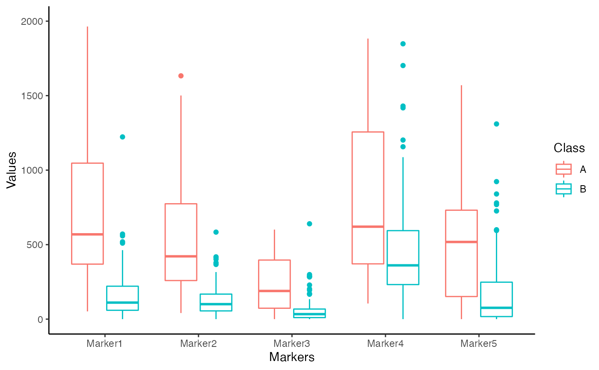
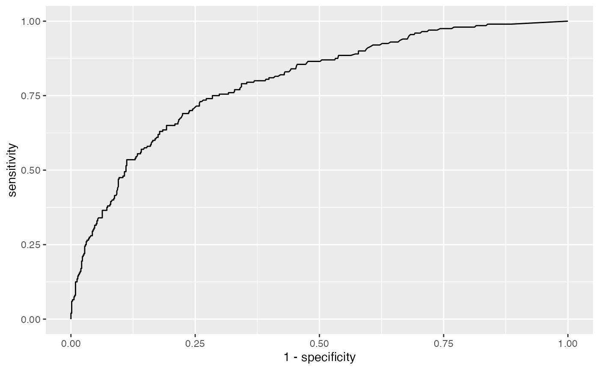
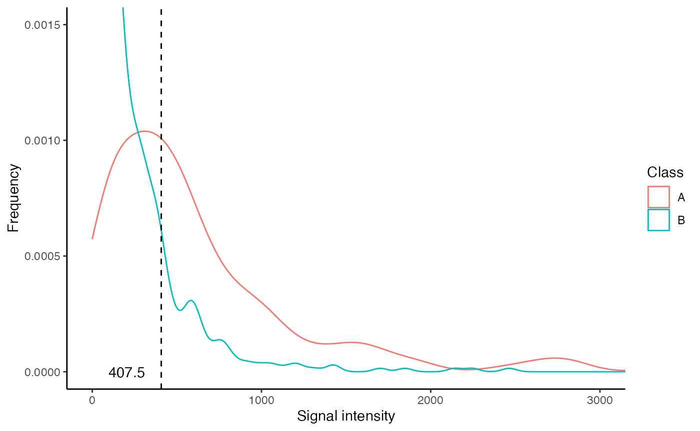
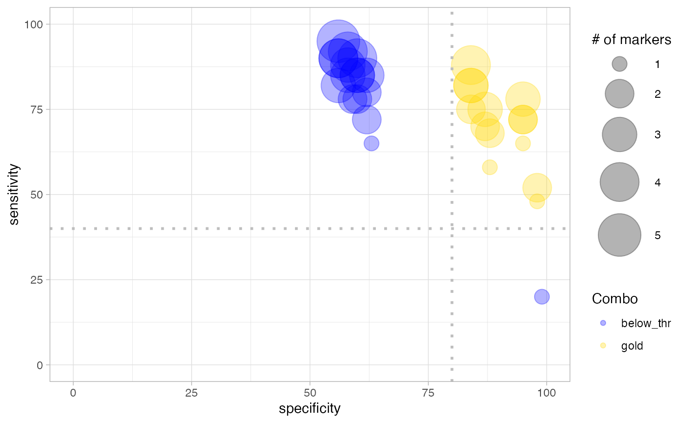
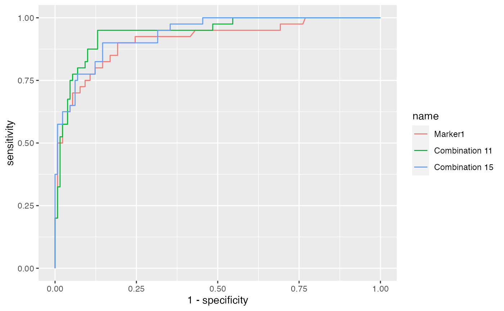
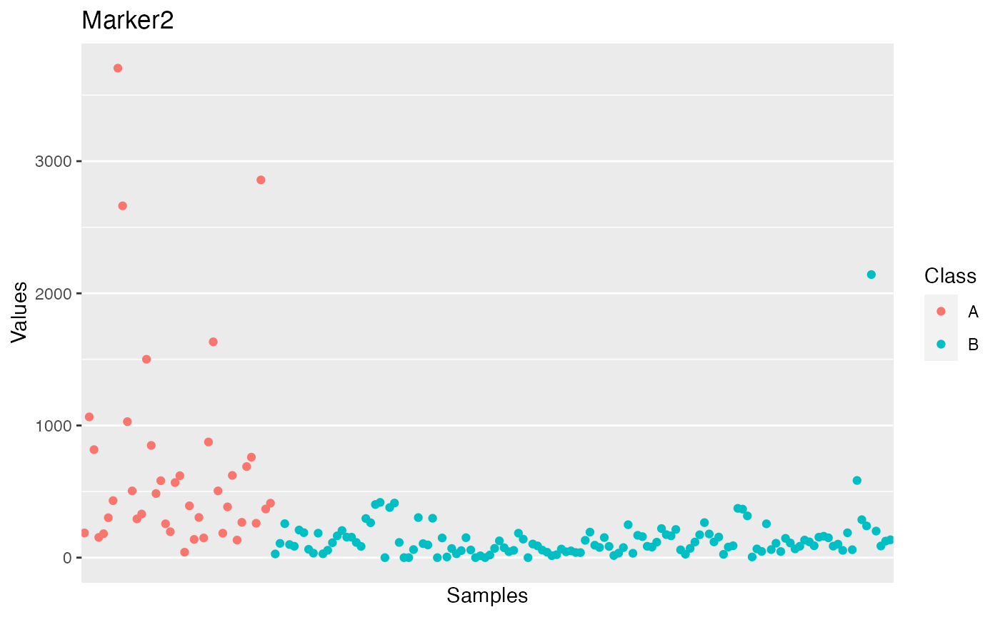
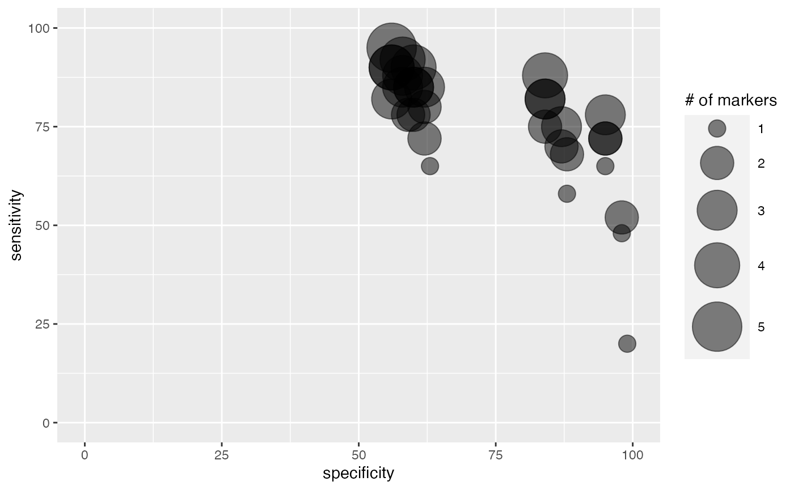
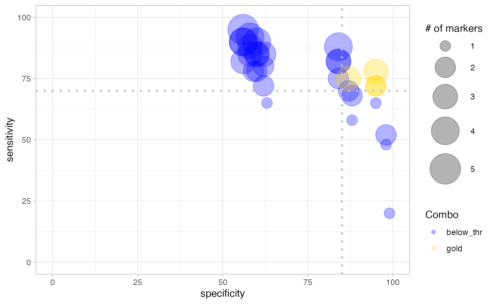

vignettes/combiroc.Rmd
combiroc.RmdPowerful biomarkers are important tools in diagnostic, clinical and research settings. In the area of diagnostic medicine, a biomarker is often used as a tool to identify subjects with a disease, or at high risk of developing a disease. Moreover, it can be used to foresee the more likely outcome of the disease, monitor its progression and predict the response to a given therapy. Diagnostic accuracy can be improved considerably by combining multiple markers, whose performance in identifying diseased subjects is usually assessed via receiver operating characteristic (ROC) curves. The CombiROC tool was originally designed as an easy to use R-Shiny web application to determine optimal combinations of markers from diverse complex omics data ( Mazzara et al. 2017 ); such an implementation is easy to use but has limited features and limitations arise from the machine it is deployed on. The CombiROC package is the natural evolution of the CombiROC tool and it allows the researcher/analyst to freely use the method and further build on it.
The aim of this document is to show the whole CombiROC workflow to get you up and running as quickly as possible with this package. To do so we’re going to use the proteomic dataset from Zingaretti et al. 2012 containing multi-marker signatures for Autoimmune Hepatitis (AIH) for samples clinically diagnosed as “abnormal” (class A) or “normal” (class B). The scope of the workflow is to first find the markers combinations, then to assess their performance in classifying samples of the dataset.
Note: if you use CombiROC in your research, please cite:
Mazzara S., Rossi R.L., Grifantini R., Donizetti S., Abrignani L., Bombaci M. (2017) CombiROC: an interactive web tool for selecting accurate marker combinations of omics data. Scientific Reports, 7:45477. 10.1038/srep45477
The dataset to be analysed should be in text format, which can be separated by commas, tabs or semicolons. Format of the columns should be the following:
The load_data() function uses a customized read.table() function that checks the conformity of the dataset format. If all the checks are passed, marker-related columns are reordered alphabetically, depending on marker names (this is necessary for a proper computation of combinations), and it imposes “Class” as the name of the second column. The loaded dataset is here assigned to the “data” object. Please note that load_data() takes the semicolumn (“;”) as default separator: if the dataset to be loaded has a different separator, i.e. a comma (“,”), is necessary to specify it in the argument sep.
## Patient.ID Class Marker1 Marker2 Marker3 Marker4 Marker5
## 1 AIH1 A 438 187 197 298 139
## 2 AIH2 A 345 293 134 523 335
## 3 AIH3 A 903 392 300 1253 0
## 4 AIH4 A 552 267 296 666 22
## 5 AIH5 A 1451 760 498 884 684
## 6 AIH6 A 497 260 175 640 572The AIH demonstrative dataset is preloaded in the package and can be directly called typing demo_data.
It is usually a good thing to visually explore your data with at least a few plots. Box plots are a nice option to observe the distribution of measurements in each sample. The user can plot the data as she/he wishes using the preferred function: since data for CombiROC are required to be in wide (untidy) format, they cannot be plotted directly with the widely used ggplot() function. Either the user is free to make the data longer (tidy) for the sole purpose of plotting or the package’s combiroc_long() function can be used for this purpose; this function wraps the tidyr::pivot_longer()function, and it’s used to reshape the data in long format. Data in long format are required for the plotting functions of the package and for many other Tidyverse-oriented applications.
The data object in the original wide format can be thus transformed into the reshaped long format data_long object, and further used. See also the section “Tips & tricks” for some plotting examples.
data_long <- combiroc_long(data)
data_long## # A tibble: 850 × 4
## Patient.ID Class Markers Values
## <chr> <chr> <chr> <int>
## 1 AIH1 A Marker1 438
## 2 AIH1 A Marker2 187
## 3 AIH1 A Marker3 197
## 4 AIH1 A Marker4 298
## 5 AIH1 A Marker5 139
## 6 AIH2 A Marker1 345
## 7 AIH2 A Marker2 293
## 8 AIH2 A Marker3 134
## 9 AIH2 A Marker4 523
## 10 AIH2 A Marker5 335
## # … with 840 more rowsIndividual markers can also be explored plotting them one by one or retrieving summary statistics. In the section Tips&Tricks at the end of this vignette we suggest code chunks that can be used to plot intensities of individual markers across all samples, as well as to calculate their summary statistics.
Since the target of the analysis is the identification of marker combinations capable to correctly classify samples, the user should first choose a signal threshold to define the positivity for a given marker/combination. This threshold should:
Usually this threshold is suggested by the guidelines of the kit used for the analysis (e.g. mean of buffer signal + n standard deviations). However, it is a good practice to always check the distribution of signal intensity of the dataset. To help the user with this operation, the markers_distribution() have been implemented. This function takes as input data in long format ( data_long ), and returns a named list (here assigned to the distr object). Specific warnings are ususlly triggered with this command remembering the users a few default parameters that are in place during the computation.
distr <- markers_distribution(data_long, case_class = 'A', y_lim = 0.0015, x_lim = 3000, signalthr_prediction = TRUE, min_SE = 40, min_SP = 80, boxplot_lim = 2000)## Warning in markers_distribution(data_long, case_class = "A", y_lim = 0.0015, :
## In $Coord object you will see only the signal threshold values at which SE>=40
## and SP>=80 by default. If you want to change this limits, please set min_SE and
## min_SP## Warning in markers_distribution(data_long, case_class = "A", y_lim = 0.0015, :
## The suggested signal threshold in $Plot_density is the median of the signal
## thresholds at which SE>=min_SE and SP>=min_SP. This is ONLY a suggestion. Please
## check if signal threshold is suggested by your analysis kit guidelines instead,
## and remember to check $Plot_density to better judge our suggested threshold by
## inspecting the 2 distributions.The distr object contains the following elements:
All this information can be plotted/displayed individually. Let’s see each one of them
The Boxplot shows the distribution of each marker values for both classes:
distr$Boxplot
The ROC curve shows how many real positive samples would be found positive (sensitivity, or SE) and how many real negative samples would be found negative (specificity, or SP) in function of signal threshold. NB: these SE and SP are refereed to the signal intensity threshold considering all the markers together; they are not the SE and SP of a single marker/combination computed by the se_sp() command further discussed in the Sensitivity and specificity paragraph.
distr$ROC
The Coord is a dataframe that contains the coordinates of the above described “ROC” (threshold, SP and SE) that have at least a min SE (40 by default) and a min SP (80 by default). These limits can be set manually by specifying min_SE and min_SP. The Youden index is also computed: this is the Youden’s J statistic capturing the performance of a dichotomous diagnostic test, with higher values for better performance ( \(J = SE + SP -1\)).
head(distr$Coord, n=10)## threshold specificity sensitivity Youden
## 238 315.5 80 65 0.4453846
## 239 317.5 80 65 0.4484615
## 240 319.5 80 65 0.4500000
## 241 320.5 80 65 0.4515385
## 242 322.0 80 65 0.4530769
## 243 325.0 80 65 0.4546154
## 244 327.5 81 65 0.4561538
## 245 328.5 81 65 0.4576923
## 246 329.5 81 64 0.4526923
## 247 331.0 81 64 0.4426923The Density_plot shows the distribution of the signal intensity values for both the classes. In addition, the function allows the user to set both the y_lim and x_lim values to provide a better visualization. One important feature of the density plot is that it calculates a possible signal intensity threshold: in case of lack of a priori knowedge of the threshold the user can set the argument signalthr_prediction = TRUE in the markers_distribution() function. In this way the function calculates a “suggested signal threshold” that corresponds to the median of the signal threshold values (in Coord) at which SE and SP are greater or equal to their set minimal values (min_SE and min_SP). This threshold is added to the “Density_plot” object as a dashed black line and a number. The use of the median allows to pick a threshold whose SE/SP are not too close to the limits (min_SE and min_SP), but it is recommended to always inspect “Coord” and choose the most appropriate signal threshold by considering SP, SE and Youden index.
This suggested signal threshold is to be used as signalthr argument of the combi() function (see further).
distr$Density_plot
combi() function computes the marker combinations and counts their corresponding positive samples for each class (once thresholds are selected). A sample, to be considered positive for a given combination, must have a value higher than a given signal threshold (signalthr) for at least a given number of markers composing that combination (combithr).
As mentioned before, signalthr should be set depending on the guidelines of the kit used for the analysis or by an accurate inspection of signal intensity distribution. In case of lack of such guidelines, one should set the value signalthr as suggested by the distr$Density_plot as described in the previous section.
In this vignette signalthr is set at 450 while combithr is set at 1, in order to reproduce the results reported in Mazzara et. al 2017 (the original CombiROC paper) or in Bombaci & Rossi 2019 as well as in the tutorial of the web app with default thresholds.
combithr, instead, should be set exclusively depending on the needed stringency: 1 is the less stringent and most common choice. The obtained combinations dataframe is assigned to tab dataframe
## Markers #Positives A #Positives B
## Marker1 Marker1 26 6
## Marker2 Marker2 19 2
## Marker3 Marker3 8 1
## Marker4 Marker4 26 48
## Marker5 Marker5 23 15
## Combination 1 Marker1-Marker2 29 6
## Combination 2 Marker1-Marker3 29 6
## Combination 3 Marker1-Marker4 31 52
## Combination 4 Marker1-Marker5 30 21
## Combination 5 Marker2-Marker3 21 2
## Combination 6 Marker2-Marker4 32 50
## Combination 7 Marker2-Marker5 28 17
## Combination 8 Marker3-Marker4 29 49
## Combination 9 Marker3-Marker5 27 16
## Combination 10 Marker4-Marker5 31 53
## Combination 11 Marker1-Marker2-Marker3 31 6
## Combination 12 Marker1-Marker2-Marker4 34 52
## Combination 13 Marker1-Marker2-Marker5 33 21
## Combination 14 Marker1-Marker3-Marker4 34 52
## Combination 15 Marker1-Marker3-Marker5 33 21se_sp() function calculates:
SE of case class (“A”) is calculated dividing the number of positive samples by the total sample of case class (% of positive “A” samples), while case class SP is calculated subtracting SE to 100 (% of negative “A” samples).
SE of control class (“B”) is calculated dividing the number of positive samples by the total sample of control class (% of positive “B” samples), while SP is calculated subtracting SE to 100 (% of negative “B” samples).
Thus, the SE of a given combination (capability to find real positives/cases) corresponds to the SE of the case class (in this case “A”), while its SP (capability to exclude real negatives/controls) corresponds to the SP of the control class (in this case “B”). The obtained value of SE, SP and number of markers are assigned to “markers” mks dataframe.
mks <- se_sp(data, tab)
mks## SE_A SE_B SP_A SP_B #Markers
## Marker1 65 5 35 95 1
## Marker2 48 2 52 98 1
## Marker3 20 1 80 99 1
## Marker4 65 37 35 63 1
## Marker5 58 12 42 88 1
## Combination 1 72 5 28 95 2
## Combination 2 72 5 28 95 2
## Combination 3 78 40 22 60 2
## Combination 4 75 16 25 84 2
## Combination 5 52 2 48 98 2
## Combination 6 80 38 20 62 2
## Combination 7 70 13 30 87 2
## Combination 8 72 38 28 62 2
## Combination 9 68 12 32 88 2
## Combination 10 78 41 22 59 2
## Combination 11 78 5 22 95 3
## Combination 12 85 40 15 60 3
## Combination 13 82 16 18 84 3
## Combination 14 85 40 15 60 3
## Combination 15 82 16 18 84 3
## Combination 16 82 44 18 56 3
## Combination 17 85 38 15 62 3
## Combination 18 75 13 25 87 3
## Combination 19 88 42 12 58 3
## Combination 20 85 42 15 58 3
## Combination 21 90 40 10 60 4
## Combination 22 88 16 12 84 4
## Combination 23 90 44 10 56 4
## Combination 24 90 44 10 56 4
## Combination 25 92 42 8 58 4
## Combination 26 95 44 5 56 5After specifying the case class (“A” in this case), the function ranked_combs() ranks the combinations by the Youden index in order to show the combinations with the highest SE (of cases) and SP (of controls) on the top, facilitating the user in the selection of the best ones. Again, the Youden index (J) is calculated in this way: \[
J = SE+SP-1
\] The user can also set (not mandatory) a minimal value of SE and/or SP that a combination must have to be selected, i.e. to be considered as “gold” combinations.
A possibility to overview how single markers and all combinations are distributed in the SE - SP coordinates is to plot them with the bubble chart code suggested in the Additional Tips&Tricks section (see: Bubble plot of all combinations) starting from the mks dataframe obtained with the se_sp() function (see above).
The bigger the bubble, the more markers are in the combination: looking at the size and distribution of bubbles across SE and SP values is useful to anticipate how effective will be the combinations in the ranking. Setting no cutoffs (i.e. SE = 0 and SP = 0), all single markers and combinations (all bubbles) will be considered and ranked in the next passage.
In this the example below the minimal values of SE and SP are set, respectively, to 40 and 80, in order to reproduce the gold combinations selection reported in Mazzara et. al 2017 and in the tutorial of the web app with default thresholds. The obtained values of combinations, ranked according to Youden index, are stored in the “ranked markers” rmks object containing the table dataframe.
rmks <- ranked_combs(data, mks, case_class = 'A', min_SE = 40, min_SP = 80)
rmks$table## SE SE_B SP_A SP #Markers Youden
## Combination 11 78 5 22 95 3 0.73
## Combination 22 88 16 12 84 4 0.72
## Combination 1 72 5 28 95 2 0.67
## Combination 2 72 5 28 95 2 0.67
## Combination 13 82 16 18 84 3 0.66
## Combination 15 82 16 18 84 3 0.66
## Combination 18 75 13 25 87 3 0.62
## Marker1 65 5 35 95 1 0.60
## Combination 4 75 16 25 84 2 0.59
## Combination 7 70 13 30 87 2 0.57
## Combination 9 68 12 32 88 2 0.56
## Combination 5 52 2 48 98 2 0.50
## Marker2 48 2 52 98 1 0.46
## Marker5 58 12 42 88 1 0.46the rmks object also has a slot for the bubble_chart plot, that can be recalled with the usual $ operator. This plot discriminates between combinations not passing the SE and SP cutoffs as set in ranked_combs() (blue bubbles) and gold combinations passing them (yellow bubbles).
rmks$bubble_chart
To allow an objective comparison of combinations, the function roc_reports() applies the Generalised Linear Model (stats::glm() with argument family= binomial) for each selected one. The resulting predictions are then used to compute ROC curves (with function pROC::roc()) and their corresponding metrics which are both returned by the function as a named list object (in this case called reports). The function roc_reports() requires as input:
load_data().combi().In addition, the user has to specify the class case, the single markers and/or the combinations of interest with the specific function’s arguments.
In the example below a single marker (Marker1) and two combinations (combinations number 11 and 15) were choosen.
reports <-roc_reports(data, markers_table = tab, case_class = 'A',
single_markers =c('Marker1'), selected_combinations = c(11,15))The obtained reports object contains 3 items that can be accessed using the $ operator:
reports$Plot
reports$Metrics## AUC SE SP CutOff ACC TN TP FN FP NPV PPV
## Marker1 0.910 0.90 0.808 0.219 0.829 105 36 4 25 0.963 0.590
## Combination 11 0.942 0.95 0.869 0.216 0.888 113 38 2 17 0.983 0.691
## Combination 15 0.935 0.90 0.854 0.248 0.865 111 36 4 19 0.965 0.655
reports$Models## $Marker1
##
## Call: glm(formula = fla, family = "binomial", data = data)
##
## Coefficients:
## (Intercept) log(Marker1 + 1)
## -13.775 2.246
##
## Degrees of Freedom: 169 Total (i.e. Null); 168 Residual
## Null Deviance: 185.5
## Residual Deviance: 101.7 AIC: 105.7
##
## $`Combination 11`
##
## Call: glm(formula = fla, family = "binomial", data = data)
##
## Coefficients:
## (Intercept) log(Marker1 + 1) log(Marker2 + 1) log(Marker3 + 1)
## -17.0128 1.5378 0.9176 0.5706
##
## Degrees of Freedom: 169 Total (i.e. Null); 166 Residual
## Null Deviance: 185.5
## Residual Deviance: 87.49 AIC: 95.49
##
## $`Combination 15`
##
## Call: glm(formula = fla, family = "binomial", data = data)
##
## Coefficients:
## (Intercept) log(Marker1 + 1) log(Marker3 + 1) log(Marker5 + 1)
## -16.0554 1.9595 0.6032 0.2805
##
## Degrees of Freedom: 169 Total (i.e. Null); 166 Residual
## Null Deviance: 185.5
## Residual Deviance: 87.95 AIC: 95.95For a more in deep discussion on how to interpret the results, this section will be focused on “Combination 11” (combining Marker1, Marker2 and Marker3) which has an optimal cutoff equal to 0.216 (see the CutOff column in reports$Metrics) . This is the equation used to compute the predictions:
\[ f(x)=β_0+β_1x_1+β_2x_2+ β_3x_3 +...+β_nx_n \]
Instead, the predicted probabilities have been calculated with the sigmoid function:
\[ p(x) = \frac{\mathrm{1} }{\mathrm{1} + e^{-f(x)} } \]
The predictions for “Combination 11” have been computed using the coefficients displayed as in reports$Models (see previous paragraph):
\[ f(x)= -17.0128 + 1.5378 *log(Marker1 + 1) + 0.9176 *log(Marker2 + 1) + 0.5706* log(Marker3 + 1) \]
Predictions (f(x) values) of ‘Combination 11’ can be visualized with the following command:
## 1 2 3 4 5 6
## 0.166224681 -0.008125528 2.192603482 1.077910194 3.816098810 0.593971602## 1 2 3 4 5 6
## 0.166224681 -0.008125528 2.192603482 1.077910194 3.816098810 0.593971602Prediction probabilities (p(x) values) of ‘Combination 11’ can be instead visualized by typing:
## 1 2 3 4 5 6
## 0.5414607 0.4979686 0.8995833 0.7460983 0.9784606 0.6442759## 1 2 3 4 5 6
## 0.5414607 0.4979686 0.8995833 0.7460983 0.9784606 0.6442759Finally, the comparison between the prediction probability and the optimal cutoff determines the classification of each sample by following this rule:
\[ C(x) = \begin{cases} 1 & {p}(x) > opt. cutoff \\ 0 & {p}(x) \leq opt.cutoff \end{cases} \]
Specifically, for “Combination 11”:
Thus, using 0.216 as cutoff, “Combination 11” is able to classify the samples in the dataset with a SE equal to 95.0%, SP equal to 86.9%, and accuracy equal to 88.8% (see ROC curves, reports$Metrics).
A new feature of the CombiROC package (not present in the CombiROC Tool Shiny app), offers the possibility to exploit the models obtained with roc_reports() for each selected marker/combination (models that were assigned to reports$Models) to directly classify new samples.
The unclassified dataset must be similar to the dataset used for the previous combinatorial analysis (i.e. of the same nature and with the same markers, but obviously without the ‘Class’ column).
To load datasets with unclassified samples a specific load_unclassified_data() function was implemented. This function is analogue to load_data() since it loads the same kind of files and it performs the same format checks, with the exception of the Class column which is not present in an unclassified datasets and thus not required.
For purely dimonstrative purposes, in the following example a “synthetic” unclassified dataset (‘data/unclassified_proteomic_data.csv’) was used: it was obtained by randomly picking 20 samples from the already classified dataset (the data). The loaded unclassified sample is here assinged to the unc_data object. Please note that this dataset has a Patient.ID column which actually allows the identification of the class, but this column is not used in the workflow and has solely labeling purposes.
unc_data <- load_unclassified_data(data = '../data/demo_unclassified_data.csv', sep = ',')This very same dataset has been included in CombiROC package as an unclassified demo dataset, that can be directly called typing demo_unclassified_data.
head(demo_unclassified_data)## Patient.ID Marker1 Marker2 Marker3 Marker4 Marker5
## 1 AIH33 1964 875 404 1883 1021
## 2 no AIH126 381 303 4 266 376
## 3 AIH12 261 153 528 449 237
## 4 no AIH112 144 155 25 600 0
## 5 no AIH41 0 193 50 382 135
## 6 no AIH38 46 51 24 342 74The prediction of the class can be achieved with classify(): this function applies the models previously calculated on a classified dataset working as training dataset, to the unclassified dataset and classifies the samples accordingly to the prediction probability and optimal cutoff as shown in the Results explanation section.
This classify() function takes as inputs:
unc_data).reports$Models that have been previously computed by roc_reports() (reports$Models).roc_reports() (reports$Metrics).In addition the user can set the labels of the predicted class (setting Positive_class and Negative_class), otherwise they will be 1 for positive samples and 0 for the negative samples by default (see the rule shown in the end of the Results explanation section).
The function returns a named list of data.frames (here assigned to cl_data), one for each marker/combination contained in the list of models (reports$Models), containing the predicted class for each sample.
To visualize a data.frame containing the classification performed by a model corresponding to a given marker/combination (‘Combination 11’ in the following example) it is sufficient to call the data.frame list and specify it.
unc_data <- demo_unclassified_data
cl_data <- classify(unc_data, Models = reports$Models, Metrics = reports$Metrics, Positive_class = 'A', Negative_class = 'B')
cl_data$`Combination 11`## [1] "A" "B" "A" "B" "B" "B" "A" "B" "A" "B" "B" "B" "B" "A" "A" "B" "B" "A" "B"
## [20] "A"The CombiROC package evolved from the CombiROC Shiny Web app and it is an ongoing project. While the Shiny app is still running, we plan to concentrate any further improvement on the package which will be enriched with new functionalities. In the meantime, here we offer tips on ancillary commands and additional ways to explore the data taking advantage of the long format of the data_long object; some of these features might be natively included or wrapped into new functions in future versions of the CombiROC package.
show_markers() returns a data frame containing the composition of each combination of interest. It requires as input one or more combinations (only their numbers), and the table with combinations and corresponding positive samples counts (“tab”, obtained with combi()).
show_markers(selected_combinations =c(11,15), markers_table = tab)## Combination Composing_markers
## 1 Combination 11 Marker1-Marker2-Marker3
## 2 Combination 15 Marker1-Marker3-Marker5combs_with() returns the combinations containing all the markers of interest. It requires as input one or more single marker, and the table with combinations and corresponding positive samples counts (“tab”, obtained with combi()). The list with the combinations containing all the markers is assigned to “combs_list” object.
combs_list <- combs_with(markers=c('Marker1', 'Marker3'), markers_table = tab)## The combinations in which you can find ALL the selected markers have been computed
combs_list## [1] 2 11 14 15 21 22 24 26A quick plotting overview of individual marker values can be done with a scatter plot using the library ggplot2. Here is an example for the marker “Marker2”:
library(dplyr) # needed for the filter() function and %>% operator
library(ggplot2)
myMarker <- "Marker2"
data_long %>%
filter(Markers == myMarker) %>%
ggplot(aes(x= Patient.ID, y=Values)) +
geom_point(aes(color=Class)) +
labs(title=myMarker, x ="Samples") +
scale_x_discrete(labels = NULL, breaks = NULL)
Further markers exploration can be done using other packages’ functions such as group_by(), summarize() and ggplot() on the the data_long dataframe. As an example, a few summary statistics can be computed for each marker of both classes, separately, as follow (the libraries dplyr and moments are needed). Numbers in this table are those behind the box plot obtained with distr$boxplot as seen before.
library(dplyr)
library(moments) # needed for skewness() function
data_long %>%
group_by(Markers, Class) %>%
summarize(Mean = mean(Values),
Min = min(Values),
Max = max(Values),
Sd = sd(Values),
CV = sd(Values)/mean(Values),
First_Quart. = quantile(Values)[2],
Median = median(Values),
Third_Quart. = quantile(Values)[4],
Skewness = skewness(Values))## # A tibble: 10 × 11
## # Groups: Markers [5]
## Markers Class Mean Min Max Sd CV First_Quart. Median
## <chr> <chr> <dbl> <int> <int> <dbl> <dbl> <dbl> <dbl>
## 1 Marker1 A 1159. 52 8584 1672. 1.44 369. 569
## 2 Marker1 B 161. 0 1223 162. 1.01 59.5 111
## 3 Marker2 A 692. 41 3704 783. 1.13 259 422.
## 4 Marker2 B 141. 0 2142 205. 1.45 55.2 100.
## 5 Marker3 A 767. 0 13178 2436. 3.18 73.2 189
## 6 Marker3 B 56.2 0 640 80.6 1.43 10.2 33.5
## 7 Marker4 A 879. 105 3390 713. 0.811 371 620.
## 8 Marker4 B 467. 0 2464 406. 0.869 232 361
## 9 Marker5 A 571. 0 2757 582. 1.02 152. 518
## 10 Marker5 B 205. 0 4114 413. 2.02 17.2 76
## # … with 2 more variables: Third_Quart. <dbl>, Skewness <dbl>The following code can be used to plot a “bubble plot” of the markers combinations according to sensitivity (SE), specificity (SP) and size (number of markers in each combination). All these plotting functions take as input the mks dataframe obtained with the se_sp() function (see above) and containing the SE and SP values for cases and controls in all marker combinations. The original mks dataframe can be customly filtered to plot only a subset of combinations meeting specific criteria.
library(dplyr) # needed for the filter() function and %>% operator
library(ggplot2)
mks %>%
ggplot(aes(x = `SP_B`, y = `SE_A`, size = `#Markers` )) +
geom_point(alpha=0.5) +
scale_size(range = c(5, 15), name="# of markers") +
scale_x_continuous(limits = c(0,100)) +
scale_y_continuous(limits = c(0,100)) +
labs(x ="specificity", y = "sensitivity")
If the user wants to customize the plot to highlight the “Golden” combinations (as it is obtained with rmks$bubble_chart), the following code can be used:
library(dplyr) # needed for the mutate() function and %>% operator
library(ggplot2)
min_SE <- 70 # choosen SE cutoff (as in the web-app slider)
min_SP <- 85 # choosen SP cutoff (as in the web-app slider)
library(dplyr)
mks %>%
mutate(Combo = ifelse((`SP_B`>min_SP & `SE_A`>min_SE),"gold","below_thr")) %>%
ggplot(aes(x = `SP_B`, y = `SE_A`, size = `#Markers`, color = Combo)) +
geom_point(alpha=0.3) +
scale_size(range = c(5, 15), name="# of markers") +
scale_x_continuous(limits = c(0,100)) +
scale_y_continuous(limits = c(0,100)) +
labs(x ="specificity", y = "sensitivity") +
guides(color = guide_legend(order=2),
size = guide_legend(order=1)) +
geom_vline(xintercept = min_SP, linetype="dotted", color = "grey", size=1) +
geom_hline(yintercept = min_SE, linetype="dotted", color = "grey", size=1) +
scale_color_manual(values=c("blue", "gold")) +
theme_light()
Back to the top of this doc